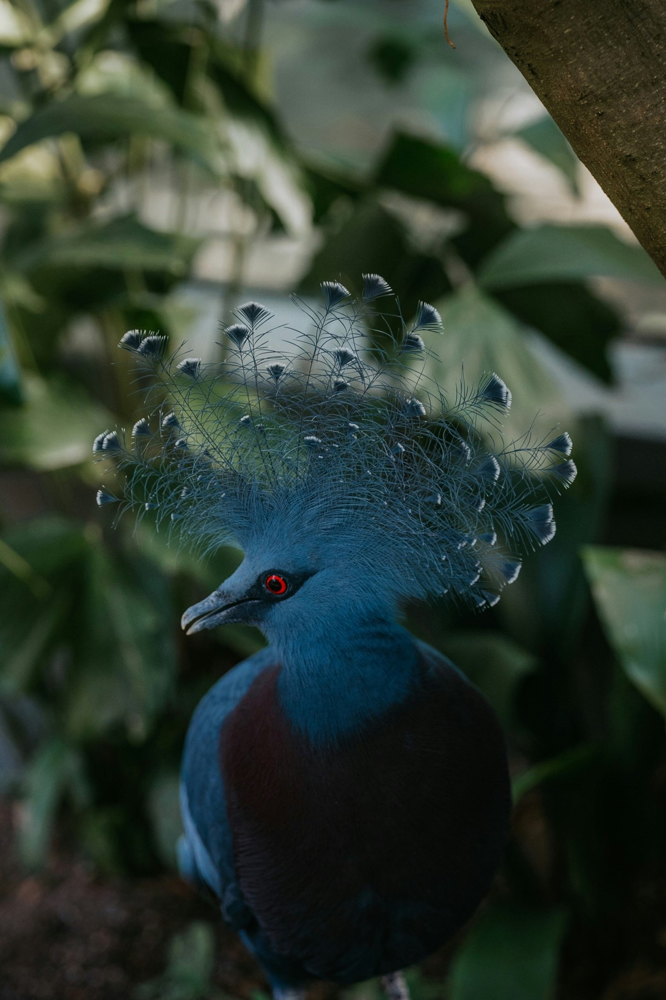

تحقق
النظر
ينظف
أنفه
يتثاءب
تغتب
أحداً
يغتاب
عندك
وفياً
مع الغائبين
الاجتماع
القهوة
الوجبة
أنا
عرّف
بنفسك
«
يقول
جابر بن عبدالله
أتيتُ
رسولَ
الله
صلى
الله
عليه
وسلم
فدققتُ
الباب،
فقال:
«مَن
ذا؟»
فقلتُ:
أنا،
فقال:
«أنا
أنا!»
ــ
مرتين
ــ
كأنه
كرهها
لا يستقبل
الباب
#
آداب عامة
آداب عامة

آداب عامة
آداب عامة
آداب عامة
آداب
عامة